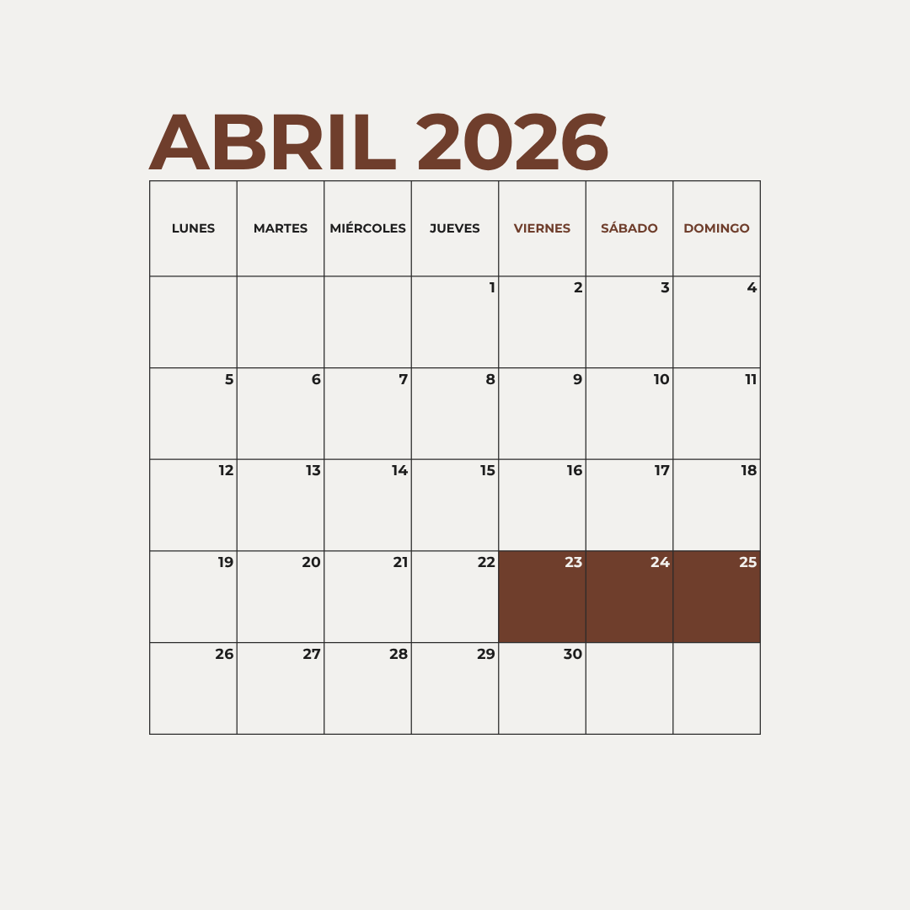
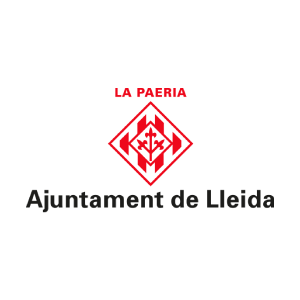
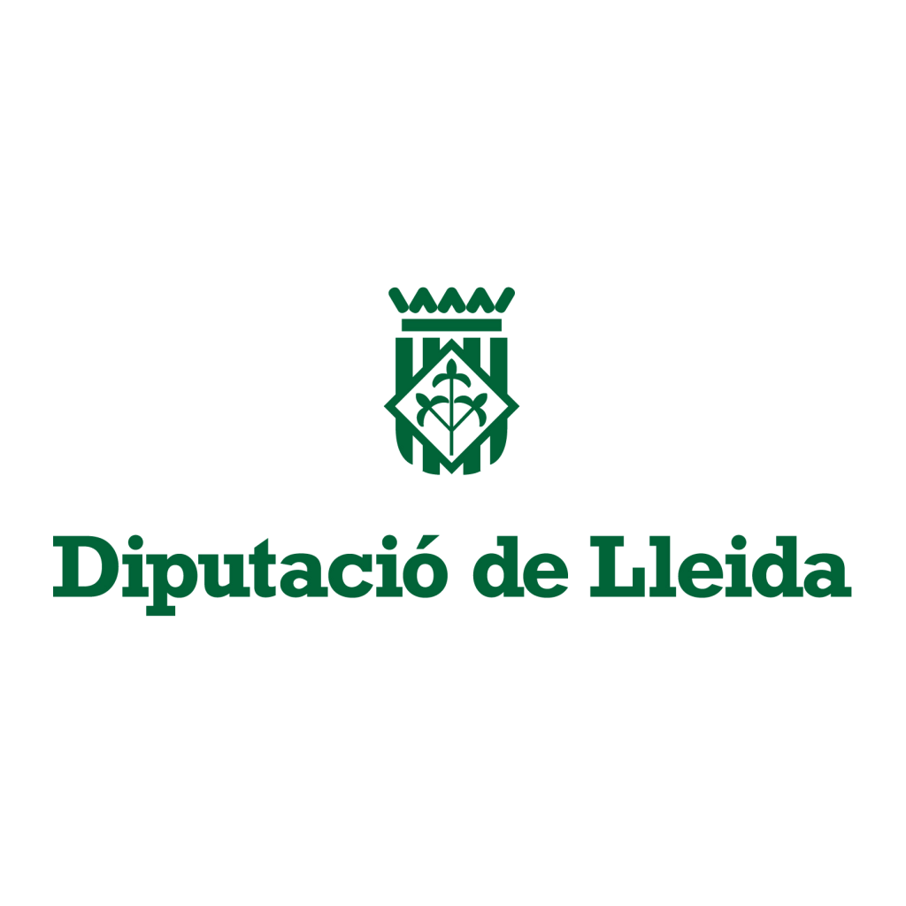
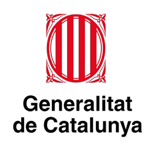
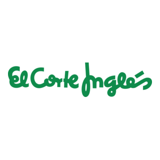

Mare Nostrum es una iniciativa cultural que transforma calles y espacios públicos en un río de libros, donados por librerías y personas, que se colocan en el suelo formando una corriente literaria por la que cualquiera puede pasear, explorar y dejarse llevar.
Aquí no hay barreras. Cualquier persona puede acercarse, explorar y dejarse llevar por aquello que le llame. Puedes coger un libro y llevártelo contigo. Si lo deseas, puedes dejar otro en su lugar. Un gesto sencillo que convierte la lectura en un acto compartido, porque creemos que la cultura debería estar al alcance de todos.
Este proyecto existe gracias a las personas que creen en una cultura abierta y accesible. Puedes formar parte de Mare Nostrum donando libros y dándoles una nueva vida, colaborando como voluntario en la creación del evento o participando como librería o entidad cultural.
Cada aportación, por pequeña que sea, hace que el río siga fluyendo.
Reserva estas fechas en tu agenda y prepárate para vivir una jornada plena de conocimiento.

| Hora | Dia 1 | Dia 2 | Dia 3 |
|---|---|---|---|
| 09:00 - 10:30 | Apertura del "Rio de libros" y Bienvenida | Lecturas compartidas | Debate: El futuro de la cultura libre |
| 11:00 - 12:30 | Conferencia: "Libros que fluyen" | Taller de restauración y donación | Presentación de proyectos literarios |
| 13:00 - 14:30 | Paseo literario guiado | Intercambio masivo de libros | Acto de cierre y agradecimiento |
| 17:00 - 19:00 | Recital de poesia en espacio público | Maratón de cuentacuentos | Recogida solidaria |



